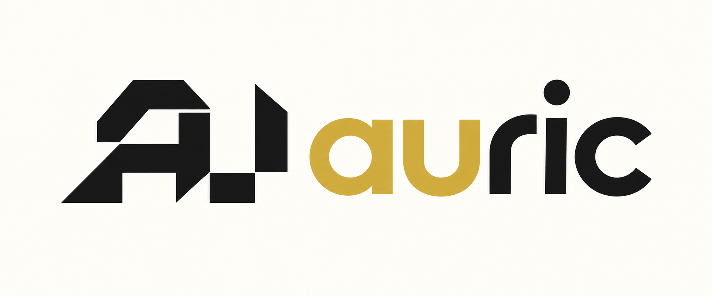

See how it connects
Map the relationships between job information, estimates, and documents to make the flow of work easier to understand.

INDEPENDENT TEAM. PRACTICAL SOFTWARE.
Your business has the information.
We’re exploring better ways to put it to work.
We’re Auric, a team of three software engineers building toward a simple idea: business software should make your day easier to navigate.
Explore our current focusAn illustration of the idea we’re exploring—not a product screenshot.
01 / OUR CURRENT FOCUS
In discoveryWe’re exploring software for restoration companies, where a single job can span estimates, documents, and conversations with insurers.
Our idea is a connected layer over that information, helping teams see how the pieces relate and find the context they need.
Map the relationships between job information, estimates, and documents to make the flow of work easier to understand.
Explore a way to search across a job’s documents, so answering a question starts with the relevant information.
Help teams bring supporting documents and job context into their communication with insurers.
This is our current direction, not a released product. We’re looking to learn from people who do this work every day.
02 / THE PEOPLE BEHIND AURIC
We’re a small software startup interested in the everyday problems that make business harder than it needs to be.
Our interest is in connecting information to action. We’ve explored ideas in seafood distribution, from helping sales teams recognize changing customer behavior to making sense of shipping schedules. Today, our focus is on restoration workflows.
We’re early in the process. We want to understand what teams actually need before deciding what to build. When you talk to Auric, you’re talking directly to the people who will build the software.
Software engineer
Software engineer
Software engineer
03 / HOW WE WORK
Talk through the tools, handoffs, and recurring questions that shape your workflow.
Understand where information gets disconnected and what takes more effort than it should.
Use what we learn to shape focused software, with feedback from the people it’s meant to help.
LET’S COMPARE NOTES
If you work in restoration, we’d like to hear how you manage job information and insurer communication—and where things get difficult.
No product demo. Just a conversation about your work and whether we can help.